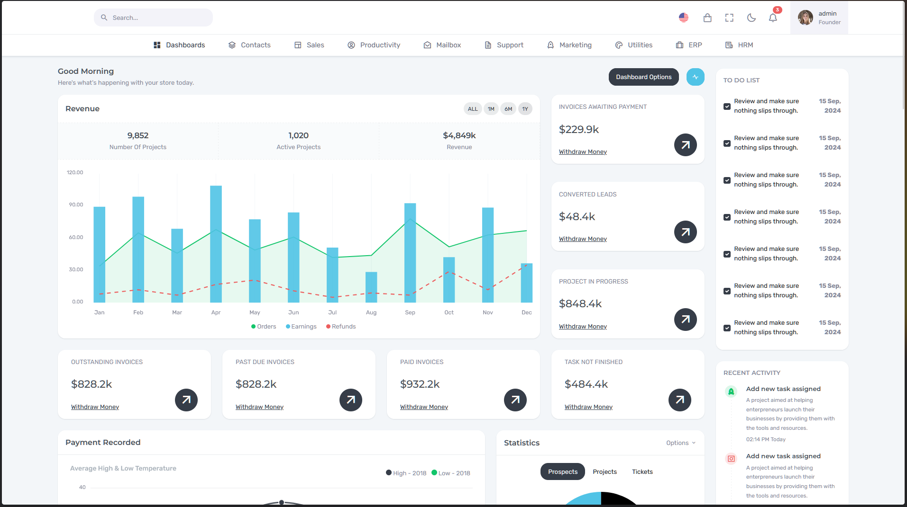
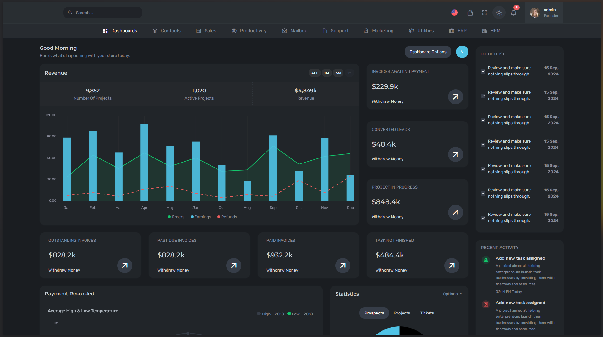
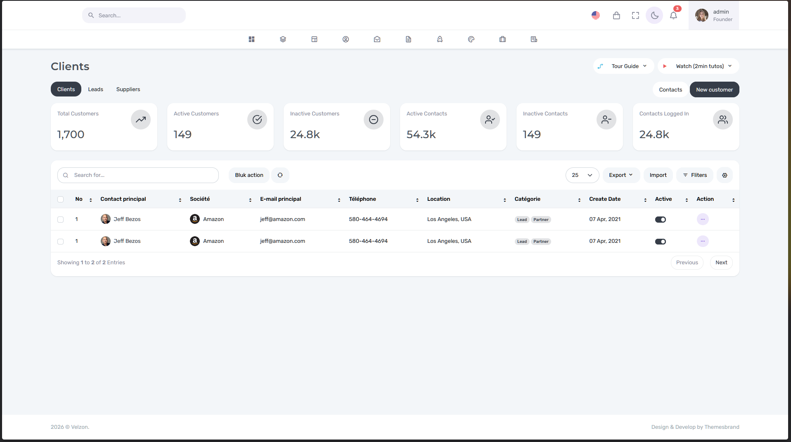
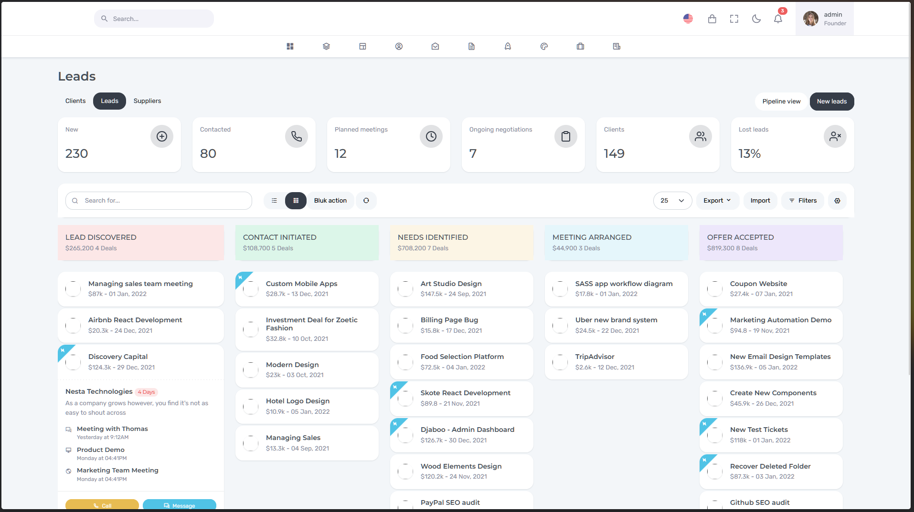
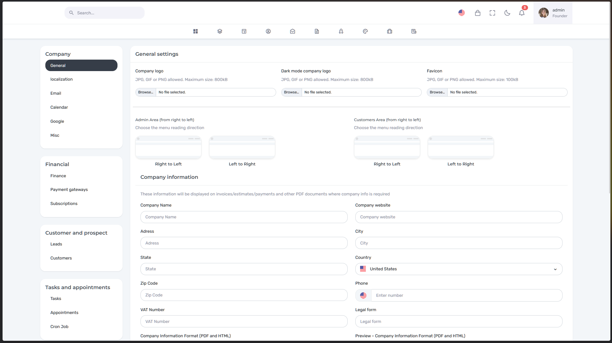
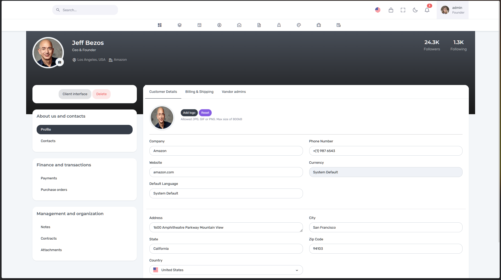
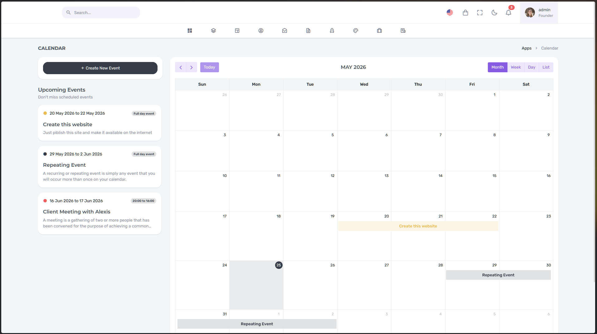

Le défi
Pendant longtemps, je me suis concentré sur le back-end. Tant que l’application fonctionnait, j’étais content. Mais au fond, je sentais qu’il me manquait quelque chose : l’autre versant du développement, celui de l’interface et de l’expérience utilisateur. Alors quand l’occasion s’est présentée de travailler sur Djaboo, un projet solo avec un vrai client (le propriétaire), j’ai sauté sur l’occasion. Le défi ? Créer une interface moderne, intuitive et visuellement attrayante de A à Z, en utilisant Laravel, tout en laissant la porte ouverte à une future équipe back-end. Et accessoirement, découvrir si ce monde-là me plairait vraiment.
Ma solution
J’ai construit l’application avec Laravel 11, PHP 8.2, MySQL, et j’ai enrichi l’interface avec :
- Bootstrap pour le style
- Quill pour l’édition de texte
- ApexCharts pour les graphiques
- Dragula pour le glisser-déposer
Le design était inspiré de « cartes flottantes aux coins arrondis » – des sortes d’îles pour une ambiance organique et dynamique. Côté organisation :
- Versioning avec GitHub (seul, mais je voulais de la rigueur)
- Déploiement sur un DigitalOcean Droplet pour que le propriétaire puisse tester à tout moment
- Gestion des tâches via Trello et communication par Google Meet + WhatsApp
Même en télétravail complet, j’ai gardé un rythme quotidien puis hebdomadaire, avec des directives claires. Mon objectif était d’apprendre à gérer un projet en autonomie, tout en livrant quelque chose de propre et de professionnel.
Le résultat
Le front-end a été validé par le propriétaire et est actuellement en cours d’intégration avec le back-end – il sera bientôt mis en production.
Ce projet a été une véritable réussite technique et professionnelle. J’ai livré une interface propre, fonctionnelle et prête à l’emploi, qui répond à tous les besoins exprimés. Le design a été particulièrement apprécié pour son côté moderne et intuitif. Mieux encore, l’architecture que j’ai mise en place permet aux développeurs back-end d’arriver sur un terrain stable et bien organisé.
En travaillant seul de bout en bout, j’ai démontré ma capacité à gérer un projet complet en autonomie : analyse des besoins, maquettage, développement front-end, versioning, déploiement d’une version de test, et documentation implicite du code. Djaboo est aujourd’hui une vitrine concrète de mon savoir-faire, et une preuve que je peux m’adapter à n’importe quelle stack – même quand je travaille en solo.
Bref, un projet dont je suis fier, et qui va effectivement servir à des utilisateurs réels.






